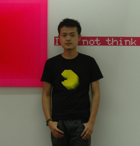

|

张云垚 （Zhang YunYao）
1985年出生于上海
群展：
2013年 “画室”——由张恩利策划 绘画展，M50艺术空间，上海
2013年 “存在 +关注——年轻艺术家群展”， 上海当代艺术馆，上海
2013年 “复调”第21种状态， 南京艺术学院美术馆，南京
2012年 “晕轮效应”， 视界艺术中心， 上海
2012年 “不合时宜”， 东画廊， 上海
2011年 “日常”，青和美术馆，南京
“我们在这儿”，东画廊，上海
“2011上海艺博会国际当代艺术展”，上海展览中心，上海
“+关注”，上海当代艺术馆，上海
“当代中国”，Wandesford画廊，科克，爱尔兰
2010年 “small beauty”，泉水边画廊，上海
“TORA TORA TORA中国新锐影像展”，草场地摄影季 北京
2009年 “12…4 BERLINER TREFFEN 8 CHINESEN” 中德艺术展，那森艺术，柏林，德国
2005年 “一个房东和23个房客”试验艺术展，上师大琴房， 上海
个展：
3013年 “触点——张云垚个展，格兰菲迪艺术家驻村计划 01100001画廊，东画廊，上海
2013年 “醚境——张云垚个展”，东画廊，上海
2012年 “国王和他的小丑”，艺术登陆新加坡，新加坡博览会
2011年 “悖论盒子——张云垚个展”，东画廊，上海
Zhang Yunyao
1985 Born in Shanghai, China
Solo Exhibition
2012 “My Dark Life - A Story of a King and His Clown”, Art Stage Singapore,
Singapore
2011 “Paradbox – A Solo Show by Zhang Yunyao”, Don Gallery, Shanghai
Exhibitions
2013 “Existence + Follow---Young Artist Group Exhibition” MOCA Shanghai, Shanghai
2012 “Outdated”, Don Gallery, Shanghai
2012 “The Halo Effect”, V Art Center,Shanghai
2011 “2011 SH Contemporary”, Shanghai Exhibition Center, Shanghai
“If…”,Don Gallery, Shanghai
“+Follow”, Museum of Contemporary Art, Shanghai
“Xinzhuang - the Stories of Five Youths”, Don Gallery, Shanghai
“Contemporary China”, Wandesford Quay Gallery, Cork, Ireland
2010 “Chorus - 4 Artists’ Show”, Don Gallery, Shanghai
“TORA TORA TORA” Chinese New Video Exhibition, Beijing
2009 “12… 4BERLINER TREFFEN 8 CHINESEN”, NOTHINGART, Berlin
2008 “2008 Summer Auction of Chinese Works of Art”, Eastlink Gallery, Shanghai
2007 “2007 Autumn Auction of Chinese Works of Art”, Eastlink Gallery, Shanghai
“Homeworld” Painting Exhibition, Xiangjiang Gallery, Shanghai
2006 “Me—Us” Painting Exhibition, Wu Xing Gallery, Shanghai
2004 “Landlord and 23 Tenants” Experimental Art Exhibition, Shanghai
|
|